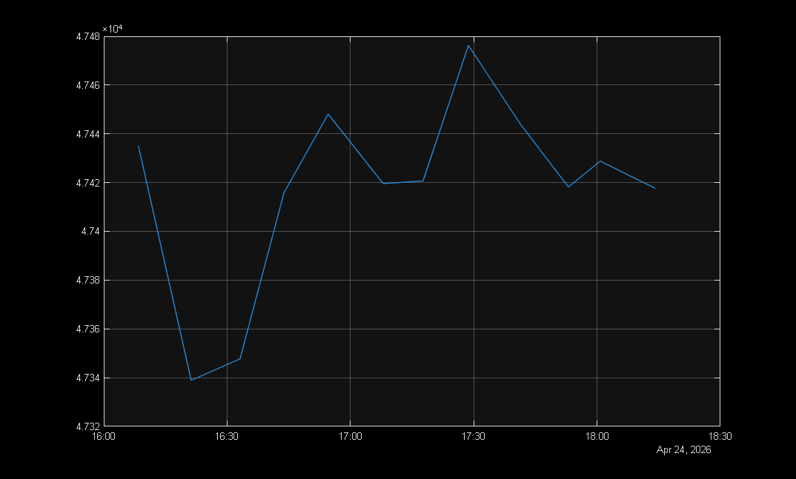
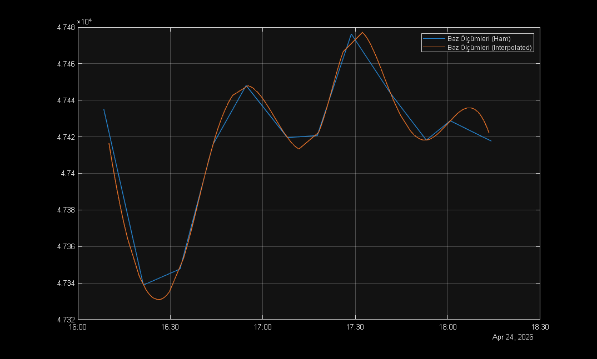
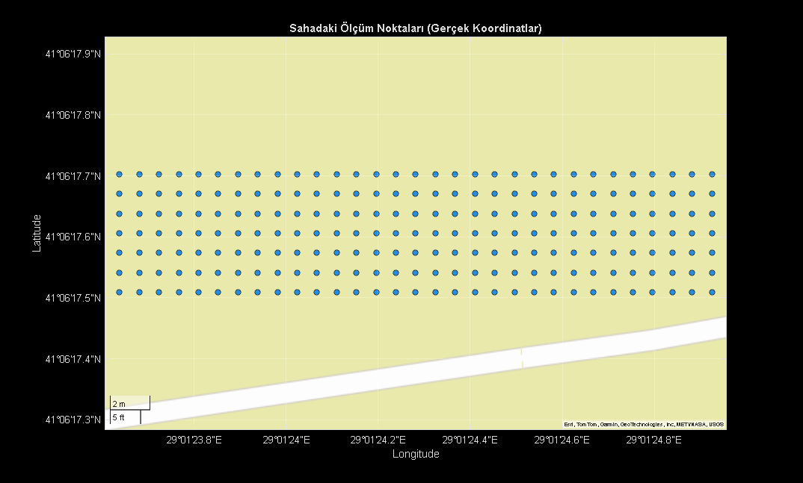
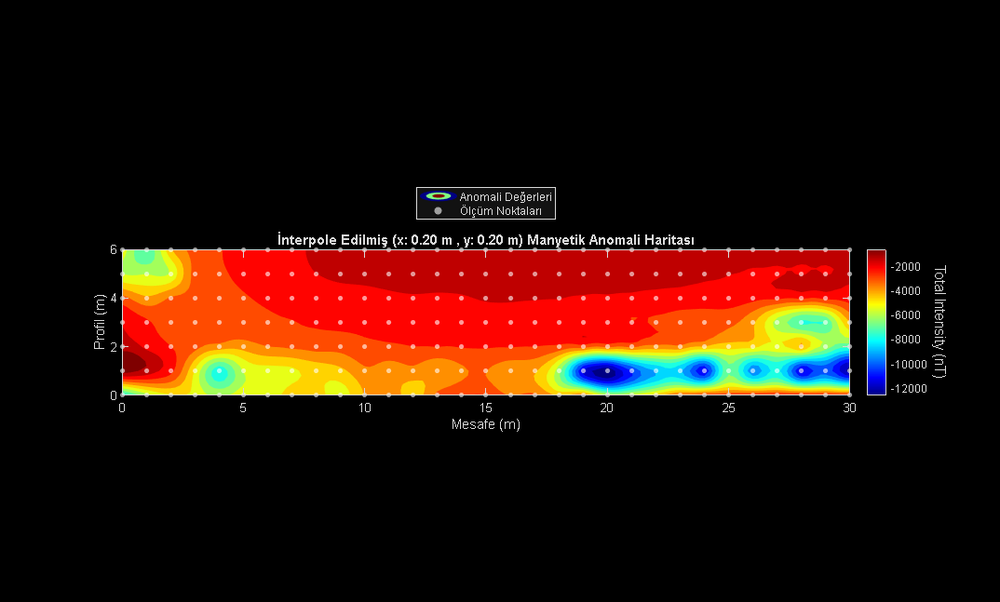

Contents
Parametreler
numProfiles = 7; numMeters = 31; % 0'dan 30'a kadar 31 nokta profileRange = 1; % Profiller arası mesafe (metre). coordinats = [ 41.1048635, 29.0235903; % Orijinal 41.1048635, 29.0232328; % 30m Batı 41.1049175, 29.0235903; % 6m Kuzey - 7 profil = 6 metre 41.1049175, 29.0232328 % 30m Batı + 6m Kuzey ]; filename = './manyetik_data.xlsx'; data = readtable(filename); stations = string(data{:, 1}); deltaX = data{:, 2}; timeStr = string(data{:, 3}); measures = data{:, 4}; % MATLAB'ın saat hesaplaması yapabilmesi için noktaları iki noktaya çeviriyoruz timeStr = strrep(timeStr, '.', ':'); times = datetime(timeStr, 'InputFormat', 'HH:mm:ss'); % Baz ve Profil indexlerini ayırma idxBase = contains(stations, 'Baz', 'IgnoreCase', true); idxProfile = contains(stations, 'Profil', 'IgnoreCase', true); basetimes = times(idxBase); baseMeasures = measures(idxBase); figure(1) plot(basetimes, baseMeasures); grid on; hold on; profiletimes = times(idxProfile); profileMeasures = measures(idxProfile); profileNames= stations(idxProfile); profiledeltaX = deltaX(idxProfile); % Ölçüm alınan metre 0-30 % 7. Profilin 6. Değeri NaN (Boş) % Önceki ve sonraki değerlerin ortalaması ile değiştiriyorum % 6 * 31 adet veri noktası sonra 7. profile ulaşırız % Ölçüm noktaları 0'dan başladığı için 6. metre -> 7 oluyor meanWindow = 2; profileMeasures(6*numMeters +7) = mean( ... profileMeasures(6*numMeters +7 -meanWindow: ... 6*numMeters +7 +meanWindow), ... 'omitnan');
Warning: Column headers from the file were modified to make them valid MATLAB identifiers before creating variable names for the table. The original column headers are saved in the VariableDescriptions property. Set 'VariableNamingRule' to 'preserve' to use the original column headers as table variable names.

Günlük Değişim (Diurnal) Düzeltmesi
% Profil ölçümlerinin yapıldığı saatlerdeki teorik Baz değerlerini % interpolasyon yardımıyla hesaplıyoruz interpolatedBase = interp1(basetimes, baseMeasures, profiletimes, 'spline'); plot(profiletimes, interpolatedBase) legend("Baz Ölçümleri (Ham)", "Baz Ölçümleri (Interpolated)") % Delta T_diurnal = T_obs - (T_base - T_mean) % omitnan -> omit nan (NaN değerlerini çıkartarak ortalama hesaplar) tMean = mean(baseMeasures, 'omitnan'); tDiurnal = profileMeasures - interpolatedBase + tMean;

IGRF Düzeltmesi
jsonFile = fileread('./igrfwmmData.json'); IGRF_F = jsondecode(jsonFile).result.totalintensity; % Toplam manyetik alan (nT) magneticAnomaly = tDiurnal - IGRF_F;
Harita Üzerinde Ölçüm Noktalarının Görselleştirilmesi
lats_vec = linspace(coordinats(1, 1), coordinats(3, 1), numProfiles); lons_vec = linspace(coordinats(1, 2), coordinats(2, 2), numMeters); [LON, LAT] = meshgrid(lons_vec, lats_vec); figure(2); % 'satellite', 'streets', 'topographic' geoscatter(LAT(:), LON(:), 30, 'filled', 'MarkerEdgeColor', 'k'); geobasemap streets; title('Sahadaki Ölçüm Noktaları (Gerçek Koordinatlar)');

1. Veriyi Matris Formuna Dönüştürme (Reshape)
magneticAnomaly (217x1) -> z (7x31)
z = reshape(magneticAnomaly, numMeters, numProfiles)'; % x: Profil boyu (0'dan 30. metreye) % y: Profiller arası mesafe (0, 1, 2, 3, 4, 5, 6. metreler) x = 0:(numMeters-1); % 0, 1, 2, ..., 30 y = 0:profileRange:(numProfiles-1)*profileRange; % 0, 1, 2, ..., 6 % Ölçüm noktalarını haritada göstermek için hazırlıyoruz [x_meas, y_meas] = meshgrid(x, y);
2. Yeni Grid ve İnterpolasyon
X ve Y'yi daha düşük ölçüm aralıkları ile veri alınmış gibi hazırlıyoruz
dx = 0.2; dy = 0.2; x_int = 0:dx:(numMeters-1); y_int = 0:dy:(numProfiles-1)*profileRange; [X, Y] = meshgrid(x_int, y_int); % Manyetik Anomali verilerini Interpolasyon ile yeni kordinat düzlemine % uygun hale getiriyoruz Z = griddata(x, y, z, X, Y, 'v4'); %Z = interp2(x, y, z, X, Y, 'linear');
Contour Map - Görselleştirme
figure; [C, h] = contourf(X, Y, Z, 15); % 15 -> Renk paletindeki renk sayısı set(h, 'LineColor', 'none'); colormap(jet); cb = colorbar; ylabel(cb,'Total Intensity (nT)','FontSize',12,'Rotation',270) shading interp; title(sprintf("İnterpole Edilmiş (x: %.2f m , y: %.2f m) Manyetik Anomali Haritası", dx, dy)); xlabel('Mesafe (m)'); ylabel('Profil (m)'); axis equal; % Gerçek ölçüm noktalarının haritaya yerleştirilmesi hold on; scatter(x_meas, y_meas, 15, 'w', 'filled', 'MarkerFaceAlpha', 0.6); legend('Anomali Değerleri', 'Ölçüm Noktaları', Location='northoutside');
